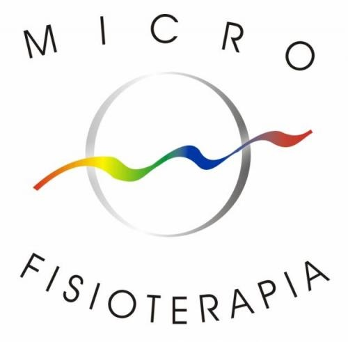

Login
Especialidades
Terapia Manual
- Astrologia e Biologia — Curso Internacional
- Astrologia e Genossociograma — Curso Internacional
- ENM — Equilíbrio Neuromuscular — Curso Básico
- ENM — Equilíbrio Neuromuscular — Curso de Aprimoramento
- Leitura Biológica — Formação Internacional
- Memória e Informação — Ciclos de uma Vida — Formação Internacional
- Microfisioterapia — Módulo Básico
- Microfisioterapia — Módulo Avançado P3P4
- Microfisioterapia — Módulo Avançado P5P6
- Microfisioterapia — Módulo Avançado P7P8
- Microfisioterapia — Módulo Avançado (Élan Vital)
- O Universo, o homem e o animal — Curso Internacional
- Psych-K Básico
- Psych-K Avançado